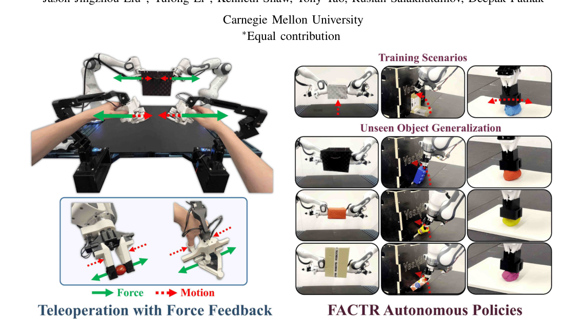
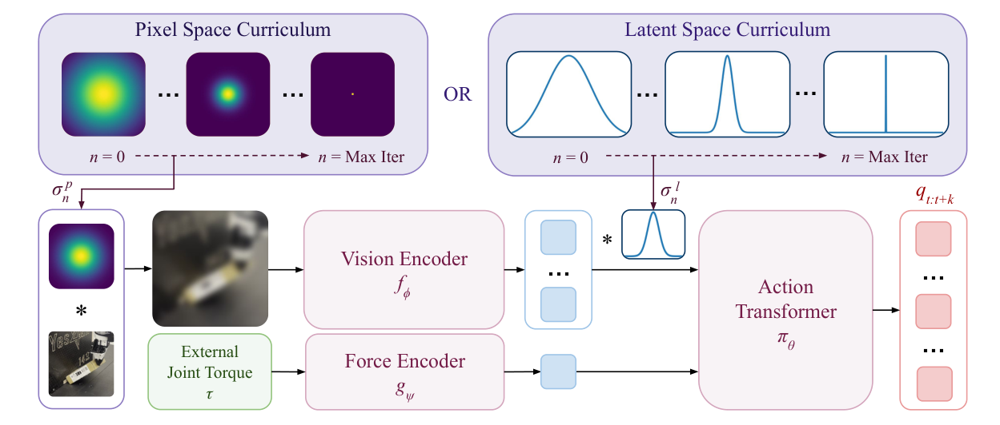
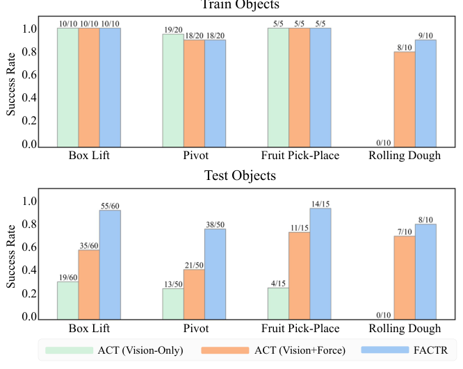
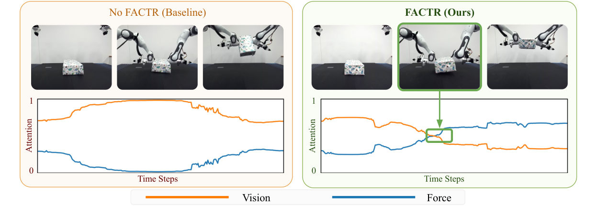

Background & Motivation
很多接觸密集(contact-rich)任務——抬箱子、擀麵團——人類靠力覺回饋來完成,但機器人策略幾乎只看視覺。原因之一是策略容易 overfit 到視覺、忽略力覺。本文一是造一套低成本雙向力回饋遙操作系統把接觸力傳回操作者;二是提出 FACTR 課程訓練:訓練初期把視覺輸入模糊化,再逐步解模糊,逼策略先學會用力覺。對未見物體的泛化平均提升約 40%。
Many contact-rich tasks—lifting a box, rolling dough—rely on force feedback for humans, yet robot policies mostly watch pixels. One reason: policies overfit to vision and ignore force. This paper (1) builds a low-cost bilateral force-feedback teleoperation rig that relays contact forces to the operator, and (2) proposes FACTR, a curriculum that blurs the visual input early and progressively sharpens it, forcing the policy to learn from force first. Generalization to unseen objects improves by ~40% on average.

如果只有 30 秒In 30 seconds
- 問題 — 機器手臂其實普遍能讀關節力矩,但遙操作與策略學習都很少用;更糟的是把力硬塞進策略,策略往往直接忽略它、只看視覺(因為接觸力大部分時間近乎為零、不夠有辨別度)。
- Problem — Robot arms readily expose joint torques, but teleop and policy learning rarely use them; worse, when force is naively added, the policy ignores it and rides on vision (contact force is near-zero most of the time and hardly discriminative).
- 方法 A(收資料) — 一套 雙向(bilateral)力回饋遙操作:只把 follower 的外部關節力矩傳回 leader,附帶重力補償與冗餘度解算,操作直覺又不受內部摩擦干擾。
- Method A (data) — A bilateral force-feedback teleoperation rig relaying only the follower's external joint torques to the leader, plus gravity compensation and redundancy resolution—intuitive, free of internal-friction artifacts.
- 方法 B(學策略) — FACTR 課程:對視覺輸入(像素或 latent)加高斯模糊/降採樣,尺度 \(\sigma_n\) 隨訓練遞減;初期視覺「看不清」→ 逼模型先靠力覺,後期再納入細節。並用 NTK 提供理論直覺。
- Method B (policy) — The FACTR curriculum: apply Gaussian blur / downsampling to the visual input (pixel or latent), with scale \(\sigma_n\) decaying over training; early on vision is "unclear" → the model must lean on force, then fine detail returns. Grounded with an NTK argument.
- 結果 — 遙操作:完成率 +64.7%、耗時 −37.4%、易用度 +83.3%。策略:對未見物體,vision-only 21.3% → 無課程加力 61.2% → FACTR 87.5%。
- Results — Teleop: completion rate +64.7%, time −37.4%, ease-of-use +83.3%. Policy on unseen objects: vision-only 21.3% → naive force 61.2% → FACTR 87.5%.
領域脈絡Field context
模仿學習(imitation learning)近年靠 Diffusion Policy、Action Chunking Transformer(ACT / ALOHA) 在精細操作上大有進展,但主要吃視覺 + 關節位置,對未見物體(不同外觀、幾何)泛化不佳。人類遇到這種情況會「一旦接觸就忽略無關的視覺細節、改用力覺」——這正是本文想給機器人的能力。
Imitation learning has advanced rapidly via Diffusion Policy and Action Chunking Transformers (ACT / ALOHA) for fine manipulation, but they mostly consume vision + joint positions and generalize poorly to unseen objects (novel appearance, geometry). Humans, once in contact, discard irrelevant visual detail and rely on force—exactly the capability this paper wants to give robots.
遙操作端,GELLO / ALOHA 這類低成本 leader-follower 系統很流行,但多半是被動(leader 不驅動)且單向(leader 收不到 follower 的力),難以做接觸密集的遙操作。也有雙向系統(如 Kobayashi et al.),但把 follower 全部力矩(含運動時的慣性/摩擦)都傳回來,反而干擾操作。
On the teleop side, low-cost leader-follower rigs like GELLO / ALOHA are popular but usually passive (unactuated leader) and unilateral (leader gets no force from the follower), so contact-rich teleop is hard. Bilateral variants exist (e.g. Kobayashi et al.) but relay the follower's full torque (including inertia/friction during motion), which disturbs the operator.
這篇的巧思是把問題拆成兩個互相咬合的環節:力覺策略要學得好,前提是資料裡有好的力覺示範(→ 造遙操作系統);而就算資料有力,訓練時模型還是會偷懶只看視覺(→ 用課程逼它)。單獨做任一半都不夠——這是「系統 + 演算法」一起出手的典型 robot learning 論文。
The neat move is splitting the problem into two interlocking halves: a good force policy needs good force demonstrations (→ build the teleop rig); yet even with force in the data, training lets the model cheat on vision (→ force it with a curriculum). Neither half alone suffices—a classic "system + algorithm" robot-learning paper.
核心洞見 · KEY INSIGHTSKEY INSIGHTS
這篇值得帶走的不只是「加了力覺」,而是底下幾個觀念:
What's worth taking away is not "we added force" but these ideas:
- 多模態學習的「模態偷懶」問題。 當一個模態(視覺)強、好學,另一個(力覺)弱、稀疏時,模型會收斂到只用強模態。這不是機器人特有,是多模態融合的通病。
- The "lazy modality" problem. When one modality (vision) is strong and easy while another (force) is weak and sparse, the model collapses to the strong one. Not robot-specific—a general pathology of multimodal fusion.
- 用「降低強模態的辨別度」來平衡學習。 與其想辦法放大弱模態,不如暫時把強模態弄糊,讓兩者的梯度貢獻在訓練初期拉平——再逐步還原。這是一個很可遷移的訓練技巧。
- Balance by dulling the strong modality. Instead of amplifying the weak one, temporarily blur the strong one so gradient contributions equalize early—then restore it. A highly transferable training trick.
- 課程 > 固定模糊 > 資料增強。 關鍵是「遞減」:最終策略仍需清晰視覺,固定模糊會讓它拿不到細節;隨機資料增強則在「夠不夠逼出力覺」與「破壞視覺」間難以兩全。
- Curriculum > fixed blur > augmentation. The point is the decay: the final policy needs sharp vision, so constant blur starves it of detail, while random augmentation can't both force-attend and preserve vision.
- 力覺是「模式切換」的訊號。 接觸/脫離接觸的時刻(抬到箱子、抓到水果、麵團擀壓的來回)在力訊號上有明顯特徵,幫策略判斷「現在該換動作」,也帶來更好的失敗恢復能力。
- Force signals mode switches. Making/breaking contact (touching the box, grasping fruit, the oscillation of rolling) shows up sharply in force, telling the policy "switch behavior now"—and yields better failure recovery.
Problem Diagnosis
現況 vs 痛點Status quo vs pain points
| 現有做法Existing approach | 它的痛點Its pain point |
|---|---|
| 純視覺模仿學習Vision-only imitation (ACT, Diffusion Policy) | 對訓練分布內物體表現好,但換未見物體(不同幾何/紋理)就掉分——因為它學到的是視覺捷徑,而非任務的物理。Great in-distribution, but drops on unseen objects (novel geometry/texture)—it learned visual shortcuts, not the task physics. |
| 硬加力覺的策略Naive force-augmented policy | 把力矩直接 concat 進觀測,策略常收斂到忽略力覺——接觸力大多時間近乎為零、辨別度低,不如視覺「好學」。Concatenating torque into the observation often makes the policy converge to ignoring force—it's near-zero and undiscriminative most of the time, "harder to learn" than vision. |
| 被動/單向遙操作Passive / unilateral teleop (GELLO, ALOHA) | 收不到力回饋,操作者感覺不到環境幾何約束,接觸密集任務下 follower 易脫離接觸、超速。No force feedback: the operator can't feel geometric constraints; in contact-rich tasks the follower loses contact and overshoots velocity limits. |
| 傳全力矩的雙向遙操作Full-torque bilateral teleop (Kobayashi et al.) | 連 follower 運動時的慣性/摩擦也一起回饋,干擾操作、降低精度與易用度。Also relays the follower's inertia/friction during motion, disturbing the operator and hurting precision/usability. |
核心問題:「如何讓機器人策略真正『用起』隨手可得的力覺,以在接觸密集任務上泛化到未見物體?」——而這又先要解決「怎麼收到好的力覺示範資料」。
The core question: "How do we make robot policies actually use the readily available force signal, to generalize to unseen objects in contact-rich tasks?"—which first requires collecting good force demonstrations.
Gap 表 — 誰缺什麼,FACTR 怎麼補Gap table — who lacks what, and how FACTR fills it
| 方法Method | 限制Limitation | 本文如何補上How this paper fills it |
|---|---|---|
| GELLO 低成本遙操作low-cost teleop |
leader 被動、靠彈簧/橡皮筋做重力補償,無力回饋。Passive leader; gravity comp via springs/rubber bands; no force feedback. | 主動驅動伺服提供力回饋 + 主動重力補償 + 可自訂冗餘度解算。Actuated servos give force feedback + active gravity comp + customizable redundancy resolution. |
| FoAR 力覺反應策略force-aware policy |
需額外標註接觸/非接觸階段來調控視/力融合。Needs extra labels of contact/non-contact phases to gate vision/force fusion. | 課程自動平衡兩模態,不需額外標註。The curriculum auto-balances the modalities, no extra labels. |
| 純視覺 ACTVision-only ACT | 未見物體泛化差(平均 21.3%)。Poor unseen-object generalization (avg 21.3%). | 同一 backbone 加力覺 + 課程 → 87.5%。Same backbone + force + curriculum → 87.5%. |
注意本文的力覺來源是手臂的外部關節力矩(external joint torque),不是額外裝觸覺皮膚或六軸力/力矩感測器。這是刻意的「用現成、免額外硬體的訊號」定位——Franka Panda、KUKA iiwa 本來就有。好處是門檻低、易推廣;代價是這個訊號比較粗、雜訊大(作者在 Limitations 也坦承)。
Note the force source is the arm's external joint torque, not an added tactile skin or 6-axis F/T sensor. This is a deliberate "use the readily-available, no-extra-hardware signal" stance—Franka Panda and KUKA iiwa already expose it. Upside: low barrier, broad applicability; cost: the signal is coarse and noisy (the authors admit this in Limitations).
Core Method
問題定義:力覺條件下的行為克隆Problem setup: force-conditioned behavior cloning
學一個策略 \(\pi_\theta\),給定當下影像 \(I_t\) 與外部關節力矩 \(\tau_t\),預測未來 \(k\) 步的關節位置目標 \(\hat q_{t:t+k}\)(action chunking)。用專家示範資料集 \(\mathcal D\)(每筆 \((I_t,\tau_t,q_t)\))做行為克隆,損失為 MSE:
Learn a policy \(\pi_\theta\) that, given image \(I_t\) and external joint torque \(\tau_t\), predicts the next \(k\) joint-position targets \(\hat q_{t:t+k}\) (action chunking). Behavior-clone from expert data \(\mathcal D\) (tuples \((I_t,\tau_t,q_t)\)) with an MSE loss:
[導讀補充] 一個容易漏看但很關鍵的設計(在 Appendix X):故意不把當下手臂關節角餵給策略當 proprioception,以免策略走捷徑「預測接近當下狀態的動作」,反而逼它從影像抽取物體資訊。
[guide note] An easy-to-miss but key choice (Appendix X): deliberately exclude the current arm joints from proprioception, so the policy can't shortcut to "predict actions near the current state," forcing it to extract object info from images.
Part A — 雙向力回饋遙操作(收資料)Part A — bilateral force-feedback teleop (data)
leader 臂的伺服馬達施加合成力矩,由五項相加:
The leader arm's servos apply a composite torque, the sum of five terms:
最關鍵的力回饋項只傳 follower 的外部力矩 \(\tau_{\text{ext}}\)(不含內部慣性/摩擦),並用縮放係數 \(\mu_f\) 做「中介式(mediated)」回饋以降低操作者認知負荷:
The key feedback term relays only the follower's external torque \(\tau_{\text{ext}}\) (excluding internal inertia/friction), scaled by \(\mu_f\) for "mediated" feedback that lowers operator cognitive load:
其餘各項:\(\tau_{\text{null}}\) 用零空間投影 \((I-J^\dagger J)\) 在不影響末端的前提下把冗餘關節穩在使用者自訂的休息姿態 \(q_{\text{rest}}\);\(\tau_{\text{grav}}\) 用 RNEA 逆動力學做重力補償;\(\tau_{\text{friction}}\) 補償靜/動摩擦;\(\tau_{\text{limit}}\) 用人工勢場擋在 follower 的關節極限內。gripper 則用伺服電流讀值經 EMA 濾波當力回饋。
Other terms: \(\tau_{\text{null}}\) uses a null-space projector \((I-J^\dagger J)\) to hold the redundant joints at a user-defined rest posture \(q_{\text{rest}}\) without imposing end-effector wrenches; \(\tau_{\text{grav}}\) is RNEA inverse-dynamics gravity comp; \(\tau_{\text{friction}}\) compensates static/kinetic friction; \(\tau_{\text{limit}}\) is an artificial-potential barrier at the follower's joint limits. The gripper uses the servo current reading (EMA-filtered) as feedback.
Part B — 策略架構 + FACTR 課程(學策略)Part B — policy architecture + FACTR curriculum

策略是 encoder-decoder transformer(ACT 風格):視覺 token \(z^V_t\in\mathbb{R}^{M_v\times d}\) 與力 token \(z^F_t\in\mathbb{R}^{1\times d}\) 串接進 encoder;decoder 用 \(k\) 個 action token 對 encoder 記憶做 cross-attention,再投影成關節動作。每個 action token 對視覺/力的注意力權重 \(\alpha^{(l)}_V,\alpha^{(l)}_F\) 之後會被拿來分析「策略到底看視覺還是看力」。
The policy is an encoder-decoder transformer (ACT-style): visual tokens \(z^V_t\in\mathbb{R}^{M_v\times d}\) and a force token \(z^F_t\in\mathbb{R}^{1\times d}\) are concatenated into the encoder; \(k\) action tokens in the decoder cross-attend to the encoder memory, then project to joint actions. The per-token attention to vision/force, \(\alpha^{(l)}_V,\alpha^{(l)}_F\), is later analyzed to see "does the policy watch vision or force."
FACTR 定義兩個模糊算子,尺度 \(\sigma_n\) 由 scheduler 控制:
FACTR defines two blurring operators with scale \(\sigma_n\) set by a scheduler:
\(G_\sigma\) 是 2D 高斯核(作用像素)、\(g_\sigma\) 是 1D 高斯核(作用 latent token)。另一種算子是降採樣(MaxPool + 最近鄰插值)。直覺:當 \(\sigma\to\infty\),所有影像被糊成幾乎同一張,視覺再也無法區分不同輸入 → 模型只能靠力覺去分辨、把梯度用來訓練力編碼器。隨 \(\sigma_n\) 遞減,細節逐步回來。
\(G_\sigma\) is a 2D Gaussian (on pixels), \(g_\sigma\) a 1D Gaussian (on latent tokens). An alternative operator is downsampling (MaxPool + nearest interp). Intuition: as \(\sigma\to\infty\) all images blur to nearly the same tensor, so vision can no longer distinguish inputs → the model must use force to tell them apart, spending gradients on the force encoder. As \(\sigma_n\) decays, detail returns.
課程排程(scheduler)Curriculum schedulers
給定初始尺度 \(\sigma_0\),沿訓練步 \(n=1\dots N\) 遞減 \(\sigma_n\)。比較五種:
Given \(\sigma_0\), decay \(\sigma_n\) over steps \(n=1\dots N\). Five variants compared:
另有 Constant(固定,即無課程對照)、Exponential、Step。並在最前面warm-up:先把 \(\sigma\) 固定在 \(\sigma_0\) 若干步,讓隨機初始化的力編碼器先在「低視覺資訊」環境暖身。整體流程見 Algorithm 1。
Plus Constant (the no-curriculum control), Exponential, and Step. A warm-up first holds \(\sigma\) at \(\sigma_0\) for some steps so the randomly-initialized force encoder can warm up under low visual information. See Algorithm 1.
理論直覺:為什麼模糊能逼出力覺(NTK)Theory: why blur forces force-attending (NTK)
用 Neural Tangent Kernel 在簡化的兩層模型上分析。輸入先被高斯核卷積 \(f(x)=W^\top(K_\sigma * x)\),其 NTK 為 \(k_\sigma(x,x')=\mathbb{E}_W\langle K_\sigma*x,\,K_\sigma*x'\rangle\)。當 \(\sigma\) 變大,高斯卷積是低通濾波,任兩輸入被糊得越來越像;極限 \(\sigma\to\infty\) 時所有 \(K_\sigma*x_i\to\phi\)(同一向量),核矩陣退化成 rank-1 的全一矩陣:
Analyzed via the Neural Tangent Kernel on a simplified two-layer model. With input first convolved, \(f(x)=W^\top(K_\sigma * x)\), the NTK is \(k_\sigma(x,x')=\mathbb{E}_W\langle K_\sigma*x,\,K_\sigma*x'\rangle\). Larger \(\sigma\) means the Gaussian acts as a low-pass filter, making any two inputs ever more similar; in the limit \(\sigma\to\infty\) all \(K_\sigma*x_i\to\phi\) (one vector) and the kernel matrix degenerates to a rank-1 all-ones matrix:
在無限寬 NTK 下,訓練殘差 \(r(t)=e^{-\eta K t}r(0)\)。把 \(r(0)\) 拆成平行/垂直於全一向量 \(v\) 的分量 \(r_\parallel+r_\perp\),由於 \(K\) 是 rank-1:
Under the infinite-width NTK, the residual is \(r(t)=e^{-\eta K t}r(0)\). Decompose \(r(0)=r_\parallel+r_\perp\) along/orthogonal to the all-ones \(v\); since \(K\) is rank-1:
意思是:視覺分支在高模糊下只能學到一個全域常數(對每張圖輸出一樣),它把誤差降到「平均值」就到頂了,失去辨別力。於是訓練初期的梯度只好轉去更新力編碼器,用力覺去區分不同輸入——這正是我們要的。[導讀補充] 這是「直覺論證」而非嚴格對 ViT 成立的定理,只在兩層模型 + 無限寬假設下推導。
Meaning: under heavy blur the vision branch can only learn a global constant (same output for every image), bottoming out by matching the mean and losing discriminative power. So early gradients instead go to the force encoder to distinguish inputs via force—exactly what we want. [guide note] This is an intuition argument, not a rigorous theorem for ViTs—derived under a two-layer, infinite-width assumption.
符號白話對照Symbols in plain words
| \(\pi_\theta,\,f_\phi,\,g_\psi\) | 動作 transformer、視覺(ViT)編碼器、力(MLP)編碼器。Action transformer, vision (ViT) encoder, force (MLP) encoder. |
| \(\hat q_{t:t+k}\) | 預測的未來 \(k\) 步關節位置目標(action chunk,實作 \(k{=}100\))。Predicted next \(k\) joint-position targets (action chunk; \(k{=}100\) in practice). |
| \(\tau_{\text{ext}}\) | follower 感測到的外部關節力矩——策略的力覺輸入,也是回饋給 leader 的訊號。The follower's external joint torque—the policy's force input and the signal fed back to the leader. |
| \(\beta_P,\beta_L\) | 像素空間 / latent 空間的模糊算子(高斯或降採樣)。Pixel-space / latent-space blurring operators (Gaussian or downsampling). |
| \(\sigma_n\) | 第 \(n\) 步的模糊尺度,隨訓練由 \(\sigma_0\) 遞減——課程的核心旋鈕。Blur scale at step \(n\), decaying from \(\sigma_0\)—the curriculum's core knob. |
| \(\alpha^{(l)}_V,\alpha^{(l)}_F\) | decoder 第 \(l\) 層 action token 對視覺 / 力的 cross-attention 權重(用來診斷模態使用)。Layer-\(l\) cross-attention of action tokens to vision / force (used to diagnose modality use). |
Experimental Evidence
主結果:對未見物體的泛化(Fig.6)Main result: generalization to unseen objects (Fig.6)
四項任務、三種方法,各在訓練物體與測試(未見)物體上評測成功率(每物體 5–10 trials,收 50 條示範)。
Four tasks, three methods, success rate on train and test (unseen) objects (5–10 trials/object, 50 demos).
| 測試物體成功率Test-object success | Vision-Only | Vision+Force (無課程)(no curric.) | FACTR |
|---|---|---|---|
| Box Lift | 31.7% | 58.3% | 91.7% |
| Non-Prehensile Pivot | 26.0% | 42.0% | 76.0% |
| Fruit Pick-Place | 26.7% | 73.3% | 93.3% |
| Rolling Dough | 0.0% | 70.0% | 80.0% |
| 平均Average | 21.3% | 61.2% | 87.5% |
三個關鍵讀法:(1) 三方法在訓練物體上大多接近(除了純視覺在擀麵團完全失敗)→ 差距幾乎全在泛化。(2) 光加力覺(無課程)就從 21.3%→61.2%,但FACTR 再往上推到 87.5% → 課程貢獻約 +26 個百分點。(3) 論文摘要說「比無課程 baseline 提升 43%」、正文說平均 40.0%,是相對提升的不同算法。
Three key reads: (1) the three methods are close on train objects (except vision-only fully failing at dough) → the gap is almost entirely generalization. (2) Adding force alone (no curriculum) lifts 21.3%→61.2%, but FACTR pushes to 87.5% → the curriculum adds ~26 points. (3) The abstract's "43% over the no-curriculum baseline" and the body's "40.0% avg" are different ways of computing relative improvement.

遙操作使用者研究(Fig.7)Teleoperation user study (Fig.7)
對比「我們的力回饋 leader」vs「無驅動、機械式關節穩定的 leader-follower(類 GELLO)」,跨四項接觸密集任務:
Our force-feedback leader vs an unactuated, mechanically-regularized leader-follower (GELLO-like), across four contact-rich tasks:
| 指標Metric | 相對改善Improvement |
|---|---|
| 任務完成率 ↑Task completion rate ↑ | +64.7% |
| 完成時間 ↓Completion time ↓ | −37.4% |
| 主觀易用度 ↑Subjective ease of use ↑ | +83.3% |
無力回饋時,操作者感覺不到環境約束,follower 常脫離接觸;且 leader/follower 關節誤差一大,PID 會產生大力矩造成超速抖動。力回饋讓操作者「摸到」約束,自然把 leader 停在 follower 附近。
Without feedback the operator can't feel constraints and the follower often loses contact; large leader/follower joint error then makes the PID emit big torques causing velocity-limit jerks. Feedback lets the operator "feel" constraints and keep the leader near the follower.
力覺=模式切換訊號(Fig.9)+ 失敗恢復Force = mode-switch signal (Fig.9) + recovery

失敗恢復(box lift,先成功抬起 → 打掉 → 看第二次):測試物體上,純視覺從第一次 31.7% 掉到第二次 13.3%(打掉後常呆住不重試);力覺策略維持相近成功率。表 I:測試物體 27/30(FACTR)vs 16/30(視覺+力)vs 4/30(純視覺)。FACTR 靠力矩讀值回落到「抬起前」的值來偵測脫離接觸,於是能重試。
Failure recovery (box lift: lift → knock down → retry): on test objects, vision-only drops from 31.7% (1st) to 13.3% (2nd)—it often freezes; force policies hold steady. Table I: 27/30 (FACTR) vs 16/30 (vision+force) vs 4/30 (vision-only) on test objects. FACTR detects loss of contact via torque reverting to pre-lift values, so it retries.
消融:課程 vs 固定;各種算子/排程(Tab.II)Ablations: curriculum vs fixed; operators/schedulers (Tab.II)
在最難的 pivot 任務上,只評測 5 個測試物體 × 5 trials(滿分 25):
On the hardest task (pivot), 5 test objects × 5 trials (out of 25):
| 排程Scheduler | Pixel·Blur | Pixel·Down | Latent·Blur | Latent·Down |
|---|---|---|---|---|
| Constant (≈無課程)(≈no curric.) | 16/25 | 15/25 | 17/25 | 16/25 |
| Linear | 19/25 | 18/25 | 19/25 | 18/25 |
| Cosine | 20/25 | 19/25 | 17/25 | 19/25 |
| Exp | 19/25 | 21/25 | 20/25 | 19/25 |
| Step | 19/25 | 18/25 | 20/25 | 19/25 |
兩個結論:(1) 任何遞減課程都優於 Constant(固定模糊)——因為最終策略仍需清晰視覺;固定模糊要嘛不夠逼力覺、要嘛拿不到細節。(2) 在 pixel/latent、blur/downsample、四種遞減排程之間沒有一致的最優 → FACTR 對課程超參相對穩健。
Two takeaways: (1) any decaying curriculum beats Constant (fixed blur)—the final policy still needs sharp vision; fixed blur either under-forces force or starves detail. (2) Across pixel/latent, blur/downsample and four decay schedules there's no uniform winner → FACTR is relatively robust to curriculum hyperparameters.
[導讀補充] 附錄另有兩個對照:用 AdaNorm(以力覺條件化 action token)取代課程 → 訓練不穩、overfit(pivot test 僅 6.1%);單純資料增強(對視覺加噪)→ 低強度贏訓練物體卻輸測試、高強度則兩邊都爛。都不如 FACTR。
[guide note] The appendix adds two controls: replacing the curriculum with AdaNorm (conditioning action tokens on force) → unstable, overfits (pivot test only 6.1%); plain data augmentation (visual noise) → low levels win train but lose test, high levels lose both. Both trail FACTR.
Critical Reading
可被質疑的點Contestable points
- 兩個貢獻纏在一起,難以歸因:遙操作系統與 FACTR 課程一起提出。策略的泛化增益,有多少來自「課程」、有多少其實來自「力回饋讓示範資料本身品質更高」?policy 消融雖固定了資料只比訓練法,但「這批資料是用力回饋收的」這件事仍是共同前提,兩半的效益沒有完全解耦。
- Two entangled contributions, hard to attribute: the teleop rig and FACTR are proposed together. Of the policy's generalization gain, how much is the "curriculum" vs the fact that "force feedback made the demonstrations themselves higher-quality"? The policy ablation fixes the data and varies only training, but "this data was collected with force feedback" remains a shared premise—the two halves aren't fully decoupled.
- 實驗規模小、統計力弱:50 條示範、每物體僅 5–10 trials。真機實驗珍貴可理解,但成功率差異(如 76% vs 42%)在這種樣本數下缺乏誤差棒/顯著性檢定,穩健性存疑。附錄雖把測試物體加倍(Bi-ACT vs FACTR)佐證,但也僅 3 個任務。
- Small scale, weak statistical power: 50 demos, only 5–10 trials/object. Real-robot cost is understandable, but success-rate gaps (e.g. 76% vs 42%) at this sample size lack error bars / significance tests. The appendix doubles test objects (Bi-ACT vs FACTR) for support, but only on 3 tasks.
- NTK 論證的適用性:理論只在兩層、無限寬、線性讀出的玩具模型上推導,卻用來解釋一個 1.2 億級的 ViT + transformer 策略。作者也自承這只是「直覺論證(a sketch)」。它給了漂亮的敘事,但不構成對真實架構的保證。
- Validity of the NTK argument: the theory is derived on a two-layer, infinite-width, linear-readout toy, then invoked to explain a large ViT + transformer policy. The authors themselves call it "a sketch." It gives a nice narrative but isn't a guarantee for the actual architecture.
- 力覺訊號的品質天花板:用的是關節力矩,而非末端六軸力/力矩或觸覺皮膚,作者坦承精度有限、雜訊大,對「細膩力調節」的任務可能不夠用。也就是說本文成立的任務類型偏「有明顯接觸/脫離事件」的,對真正精細的力控未必適用。
- Ceiling on force-signal quality: it uses joint torques, not an end-effector F/T sensor or tactile skin; the authors admit limited precision and noise, possibly insufficient for tasks needing subtle force modulation. So the demonstrated task class skews toward clear contact/release events, not truly fine force control.
- 課程超參仍需調:雖宣稱對排程/算子穩健,但 Tab.II 最好與最差(21/25 vs 15/25)差距不小,且\(\sigma_0\)、warm-up 步數、對哪個任務用 pixel 還是 latent 都是要選的旋鈕。作者也把「高度依賴超參、需大量調校」列為限制。
- Curriculum still needs tuning: despite the robustness claim, Tab.II's best-vs-worst (21/25 vs 15/25) is non-trivial, and \(\sigma_0\), warm-up length, and pixel-vs-latent per task are all knobs. The authors list "highly hyperparameter-dependent, needs extensive tuning" as a limitation.
給讀書會 / 審稿的犀利問題Sharp questions for a reading group / review
- 資料 vs 訓練法:若拿「無力回饋遙操作」收的資料 + FACTR 課程,泛化還能到 87.5% 嗎?反過來,用力回饋資料 + 無課程只有 61.2%——所以到底是「好資料」還是「好課程」在主導?能否設計交叉實驗徹底解耦?
- Data vs training: with data from a non-force-feedback rig + FACTR, would generalization still reach 87.5%? Conversely, force-feedback data + no curriculum gives only 61.2%—so is it "good data" or "good curriculum" that dominates? Can a crossed experiment fully decouple them?
- 失敗模式:當 \(\sigma_0\) 設太大或衰減太慢,是否會出現「策略永遠學不好視覺、只靠力」的反效果?有沒有觀察到課程過猶不及的情形?
- Failure modes: if \(\sigma_0\) is too large or decays too slowly, does the policy over-rely on force and never learn vision? Was any "too much of a good thing" behavior observed?
- 規模化:結論建立在 50 條示範、4 個任務。若擴到數百條示範、更多樣的任務,課程的邊際效益會不會遞減(資料一多,模型自然學得到力)?
- Scaling: conclusions rest on 50 demos, 4 tasks. Scaled to hundreds of demos and more diverse tasks, does the curriculum's marginal benefit shrink (with enough data, the model learns force anyway)?
- 與更強力覺硬體比:若把關節力矩換成末端六軸力/力矩或觸覺皮膚,FACTR 的增益是變大(更值得用力)還是變小(訊號夠好本就學得到)?這關係到方法的長期價值。
- Vs better force hardware: swapping joint torque for an end-effector F/T sensor or tactile skin—does FACTR's benefit grow (more worth attending to) or shrink (a good enough signal is learned anyway)? This bears on the method's long-term value.
- 理論的可證偽性:NTK 敘事預測「初期梯度轉向力編碼器」。能否直接量測訓練早期力/視覺編碼器的梯度範數來驗證這個機制,而不只看最終注意力?
- Falsifiability of the theory: the NTK story predicts "early gradients shift to the force encoder." Could one directly measure early-training gradient norms of the force vs vision encoders to test this mechanism, not just final attention?
Takeaways
對你研究的啟發Implications for your research
- 「弱模態被強模態壓過」是可設計解的:任何多模態融合(視覺+語言、影像+音訊、影像+感測器)只要有一個模態又強又好學,就可能發生模態偷懶。FACTR 給的通用配方是——在訓練早期暫時削弱強模態的辨別度、再逐步還原,把學習順序掰回來。
- "Strong modality drowns the weak" is a designable problem: any multimodal fusion (vision+language, image+audio, image+sensor) with one strong, easy modality risks a lazy modality. FACTR's general recipe—temporarily dull the strong modality's discriminability early, then restore it—rebalances the learning order.
- 課程的核心是「遞減」而非「擾動」:與資料增強的本質差別,提醒我們設計 curriculum 時要問「最終模型需要的是什麼?」——若最終需要清晰視覺,就必須讓它在後期拿得到,否則只是自我設限。
- The curriculum's essence is "decay," not "perturbation": the essential difference from augmentation reminds us to ask "what does the final model need?"—if it needs sharp vision, it must get it late, else you just handicap yourself.
- 系統與演算法要一起想:力覺策略學不好,可能問題出在「資料裡根本沒有好的力覺示範」。做 robot learning 時,資料收集介面(遙操作)和學習演算法是耦合的,值得一起設計。
- Co-design system and algorithm: a poor force policy may stem from "no good force demos in the data." In robot learning, the data-collection interface (teleop) and the learning algorithm are coupled and worth designing together.
- 力覺=事件偵測器:即使不追求精細力控,力訊號在「接觸/脫離/滑動」這類離散事件上極有辨別度,適合當「模式切換」與「失敗恢復」的觸發器——這在很多操作任務都用得上。
- Force = an event detector: even without fine force control, force is highly discriminative for discrete events (contact/release/slip), ideal as a trigger for "mode switching" and "failure recovery"—useful across many manipulation tasks.
值得引用的點What's worth citing
| 當你要主張…When you claim… | 就引這篇Cite this for |
|---|---|
| 「多模態策略會忽略弱/稀疏模態」"multimodal policies ignore the weak/sparse modality" | 作為具體證據 + 一種課程解法(附 attention 診斷)。Concrete evidence + a curriculum fix (with attention diagnostics). |
| 「力覺提升接觸密集任務的物體泛化」"force improves object generalization in contact-rich tasks" | 引主結果(21.3%→87.5%)與擀麵團的視覺不可分案例。Cite the main result (21.3%→87.5%) and the visually-indistinguishable dough case. |
| 「低成本雙向力回饋遙操作」"low-cost bilateral force-feedback teleoperation" | 引「只傳外部力矩」設計與使用者研究(+64.7% 完成率)。Cite the "external-torque-only" design and user study (+64.7% completion). |
FACTR 用一個簡單卻反直覺的招式——訓練初期把視覺弄糊、再逐步還原——治好了「機器人策略忽略力覺」的老毛病;搭配一套只傳外部力矩的低成本力回饋遙操作,讓接觸密集任務對未見物體的泛化從 21.3% 拉到 87.5%。它的價值不在單一 SOTA 數字,而在點出並解決一個多模態學習的普遍病症。
FACTR uses a simple, counter-intuitive move—blur vision early, then progressively sharpen it—to cure the chronic "robot policies ignore force" problem; paired with a low-cost, external-torque-only force-feedback teleop rig, it lifts unseen-object generalization in contact-rich tasks from 21.3% to 87.5%. Its value is less a single SOTA number than naming and fixing a general pathology of multimodal learning.